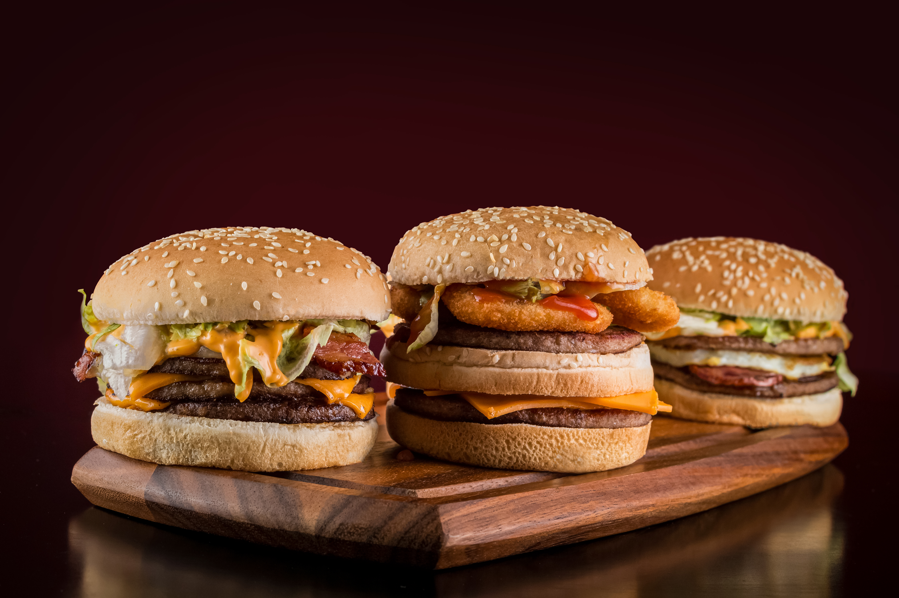
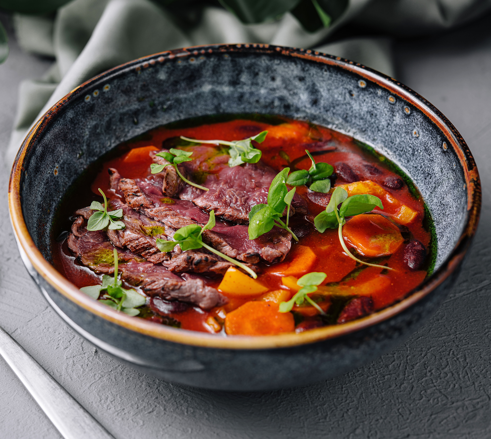
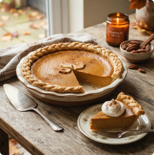
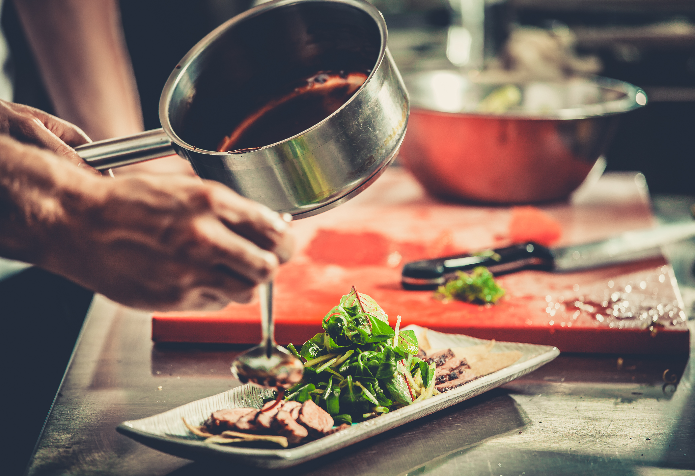

Welcome to EveryCook
Search
Popular Recipes

Pizza

Spaghetti cabonara

Mac & cheese

Tbone steak
New recipes

Burger

Grilled Chicken

Beef stock soup

Pumpkinpie
Meet our chefs

Professional chefs

Amature cooks
Discover our brands

Foodstory of the week
Some dishes are built in minutes. This one took all afternoon. It starts with bones, roasted until they turn deep amber, then simmered for hours with wine, shallots, and a sprig of thyme until the kitchen smells like something worth waiting for. The liquid reduces slowly, patiently, until it turns almost syrupy — a sauce so rich it clings to the back of a spoon and catches the light like dark glass. There's no rushing a reduction like this. You can turn up the heat, but the flavor won't follow. It has to be coaxed, watched, tasted again and again, adjusted with a splash more wine or a knob of butter swirled in right at the end to bring it all together. Tonight, it's ladled over thin slices of seared beef, still faintly pink at the center, and arranged alongside a tangle of fresh greens, herbs, and thin ribbons of vegetable pickled just enough to cut through the richness. The plate itself is simple — no towers, no foam, nothing fussy. Just good ingredients, treated well, and a sauce that's earned its place at the center of it all. That's the thing about a good foodstory: the best part of the dish is rarely the part you can see. It's the hours before it ever reaches the table — the reducing, the tasting, the small decisions that add up to something quietly extraordinary.

Tips and advice
How to make caramel
Learn how to make smooth, golden caramel.
Why you should rest your steak
The five minutes that save a juice bite .
Freeze herbs before they wilt
Ice cube trays plus oil, thats it